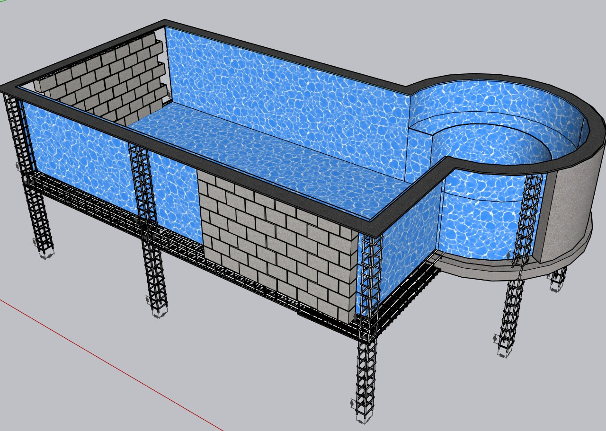
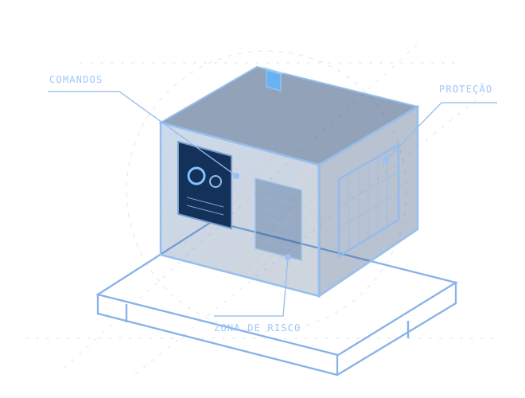
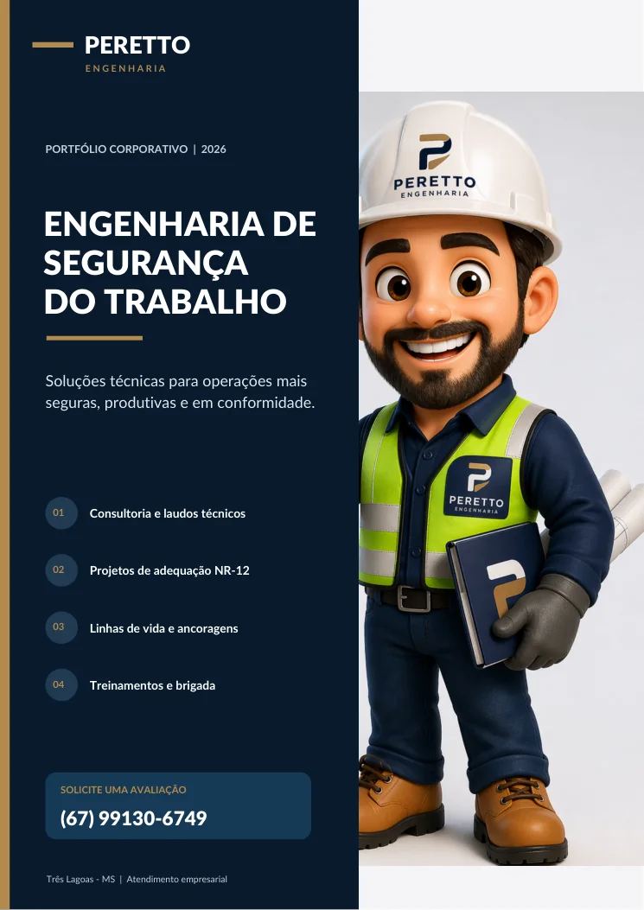

01
Engenharia civil
Projetos, reformas, adequações, estruturas e soluções técnicas para edificações e infraestrutura.
Solicitar este serviçoDa análise técnica à execução, conectamos engenharia civil, segurança do trabalho e soluções industriais para transformar necessidades em resultados confiáveis.

Atuação técnica integrada, com projetos, documentação e orientação alinhados às condições e aos riscos de cada operação.
Projetos, reformas, adequações, estruturas e soluções técnicas para edificações e infraestrutura.
Solicitar este serviçoConsultoria em SST, PGR, LTCAT, avaliações de riscos e apoio à gestão documental.
Solicitar este serviçoProjetos de segurança para máquinas e equipamentos, com desenhos técnicos, memoriais e ART, quando aplicável.
Solicitar este serviçoProjetos de ancoragens, linhas de vida e sistemas de proteção para trabalhos em altura.
Solicitar este serviçoVistorias técnicas, pareceres, relatórios, inspeções e recomendações de adequação.
Solicitar este serviçoCapacitações NR-12, NR-18, NR-20, NR-33, NR-35 e formação de brigada de incêndio.
Solicitar este serviçoIntervenções civis, conservação, adequações de galpões e melhorias de infraestrutura.
Solicitar este serviçoProjetos e documentação técnica para segurança contra incêndio, PCSIP e regularização conforme escopo.
Solicitar este serviço
Atuamos na identificação de riscos e no desenvolvimento de soluções de engenharia, com documentação clara e foco na aplicação prática.
A Peretto Engenharia atua de forma integrada em engenharia civil e engenharia de segurança do trabalho, apoiando empresas na prevenção de riscos, na melhoria de instalações e na tomada de decisões técnicas.
Com experiência em consultoria e perícias judiciais trabalhistas, oferecemos um olhar fundamentado, com foco em soluções viáveis, comunicação objetiva e documentação consistente.
Conheça nossos portfóliosOuvimos sua necessidade e avaliamos o contexto do serviço.
Identificamos condições, requisitos e riscos relevantes.
Definimos escopo, entregáveis, prazo e responsabilidades.
Executamos as etapas contratadas e formalizamos a entrega.
Conheça registros de projetos e atividades em engenharia civil, obras e ambientes industriais.
Visualização arquitetônica de residência com detalhamento volumétrico e cobertura.
Registro de área operacional e infraestrutura em ambiente industrial.
Acompanhamento em campo de estrutura e alvenaria durante a construção.
Regularização de obras.
Registro da sala de treinamento sobre combate a incêndio.
Construção e reforma de estruturas.
Explore nossas áreas de atuação e os tipos de soluções que podemos desenvolver para sua empresa.

PDF · 8 PÁGINASConsultoria, laudos, projetos NR-12, linhas de vida, treinamentos e perícias.
Melhorias prediais, adequações civis, infraestrutura e soluções de engenharia.
Não encontrou sua resposta? Nossa equipe pode analisar a necessidade da sua empresa.
Falar com a PerettoSim. A viabilidade de atendimento presencial ou remoto depende da localização, do serviço e das necessidades do projeto.
A documentação técnica, como desenhos, memorial de cálculo e ART, é definida conforme a natureza e o escopo do serviço contratado.
Sim. Podemos avaliar uma proposta de acompanhamento técnico recorrente, considerando a rotina e as necessidades da operação.
Preencha o formulário abaixo. Ele prepara uma mensagem com os dados do serviço e abre o WhatsApp para você enviar sua solicitação.
Conte o que sua empresa precisa. Vamos entender o cenário e avaliar a melhor forma de atendimento.
Preencha os dados, confira a mensagem gerada e abra a conversa no WhatsApp.